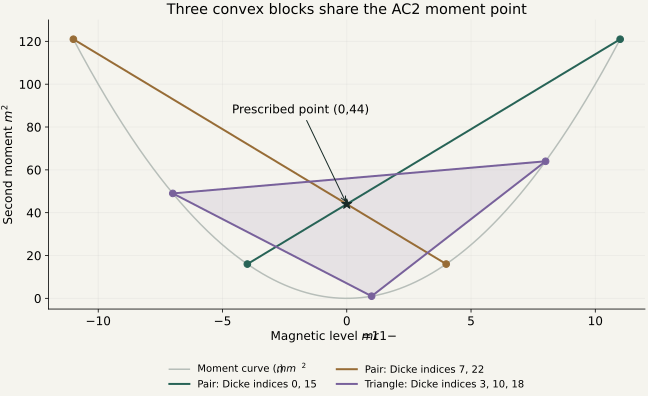

Anticoherent subspaces · Prescribed moments and analytical constructions
← AC-subspace catalogue ↗Constructing AC2 subspaces from prescribed moments
Convex combinations of lifted Dicke levels supply exact first and second moments. Adding controlled phase cancellation gives a stronger general construction, with every coefficient specified by rational numbers and finite radical recurrences.
The proof covers every integer in this range. It increases the earlier four-band construction by one dimension whenever . It does not establish that these subspaces have maximum possible dimension.
The target is a prescribed point on the moment plane
Put . A probability distribution on Dicke indices has the required diagonal AC2 moments when
Equivalently, the lifted points have a convex combination equal to . If the used Dicke indices are globally separated by at least three, all spin operators shifting excitation by one or two vanish on their coordinate space. Disjoint convex blocks then give an orthonormal AC2 basis:
For three distinct magnetic levels , the probabilities are explicit:
A two-point block exists exactly when . The weights are and . Positivity is the geometric condition that the target lies in the block’s segment or triangle.

The exact number of disjoint blocks on a fixed sparse support
Let be the number of available nodes, the Tukey depth of the target, and the number of pairs satisfying . Those pairs are automatically disjoint. The largest number of disjoint moment blocks is
The depth counts the fewest nodes in a generic halfplane through the target. Carathéodory’s theorem reduces blocks to pairs or triangles; the prescribed planar Tverberg theorem supplies a matching construction after the pairs are removed. This statement concerns a fixed support set and disjoint blocks, not arbitrary AC2 subspaces. See the geometry proof ↗ and Har-Peled–Zhou, Theorem 7 ↗.
Four Dicke bands with phases: a stronger general family
A globally three-separated support leaves too few available Dicke levels for a faster construction. The new family permits levels two apart inside each of four bands. Convex moment weights solve the diagonal conditions, and four-sided polygons provide the phases that cancel every remaining cross term.
For , take . For , take . The basis has the explicit form
The weights are positive rational numbers. The unit phases are obtained recursively by drawing a quadrilateral of prescribed side lengths; its diagonal and angles require only field operations and square roots. No optimization or numerical root fitting is part of this prescription.
Rational weights and exact radical phase recurrence
For adjacent rows define and
These four positive lengths satisfy strict quadrilateral inequalities for every allowed . Write them as and choose
Then . The bands have gaps three or four; the only distance-two cross entries connect adjacent rows within a band. The displayed recurrence cancels all of them.
Improvement over the preceding general formulas
The table compares the strongest preceding general construction with the new family. Special constructions can still give larger dimensions at particular sizes.
| Qubits | Previous general lower bound | New radical family |
|---|---|---|
| 41 | 4 | 5 |
| 49 | 5 | 6 |
| 57 | 6 | 7 |
| 65 | 7 | 8 |
Combining the earlier separated triples with the new theorem gives, for every ,
Exact polynomial coefficient certificates establish positivity and phase closure for all eight remainders. An independent implementation reconstructs the weights from the physical moment equations and verifies the same all-integer domain. Direct spin-matrix checks for 144 sizes separately validate the numerical rendering.
Two particularly simple analytical bases
These bases simplify or illustrate already attained dimensions. They do not change the catalogue’s unrestricted lower or upper endpoints.
12 qubits · dimension 2
Five globally separated levels support a two-dimensional real radical compression. The two vectors overlap on the same support. No disjoint partition into two moment blocks exists on these five nodes, so this example shows what overlap adds.
Show every analytical basis coefficient
36 ordered two-qubit cross-reduction entries are verified exactly, including every pair of different basis vectors.
22 qubits · dimension 3
Two pairs and one triangle give a three-dimensional basis with positive real radical coefficients. The seven used Dicke levels have global spacing at least three. This simplifies the earlier complex-phase witness.
Show every analytical basis coefficient
81 ordered two-qubit cross-reduction entries are verified exactly, including every pair of different basis vectors.
An exact construction algorithm allowing overlapping supports
On any globally three-separated support, the full AC2 problem reduces to two diagonal Hermitian forms:
Choose a small rational so that never vanishes. Sort the ratios separately on the positive and negative sectors, obtaining and . A dimension- compression exists precisely when and
The Fan–Pall interlacing theorem ↗ supplies compatible compressed spectra. Successive codimension-one compressions then construct an exact basis using rational arithmetic and square roots. The supplied implementation includes examples at 12 and 21 qubits. This criterion solves the existence question on the chosen support, not the unrestricted AC2 problem.
A rigorous limit of globally sparse supports
Even if columns overlap and the available Dicke levels are chosen nonuniformly, global spacing at least three imposes
A quadratic with zero code compression can be chosen to be positive only on support levels . Projection into these positive coordinates is injective. The interval has length , so at spacing three it contains at most support points.
This is a bound on the sparse-support mechanism. The four-band family escapes it by using distance-two levels and canceling the corresponding cross terms with phases. Convex diagonal moments alone would not establish anticoherence in that denser setting.
Proofs and reproducible data
The general lower bound is proved for all allowed integers. Exact example certificates check entire subspaces rather than only the individual basis vectors. No unrestricted optimality claim follows from these constructions.